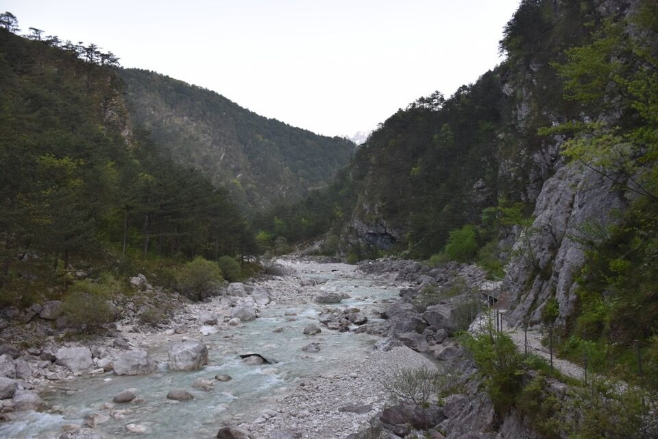

Bella cima, non difficile, dal panorama sorprendentemente stupendo.

Quello più in alto in centro è proprio il Cuel da la Ceit; quasi sovrapposto, più basso, il Cuel da la Ruviis che avevo già salito.

Arrivare alle prime luci del mattino a Stavoli, in piena primavera, è qualcosa di magnifico.

Prendiamo il sentiero per Pustot, senza incertezze dato che lo conoscevo già. Fortuna che è stato pulito, altrimenti dopo l'incendio sarebbe un incubo passare!


Bellissimo anfiteatro appena sotto lo stavolo Pustot: tutto il bosco nei paraggi dello stavolo è stupendo.

Il mitico stavolo Pustot!

Iniziamo ad attaccare il monte.
La visione verso Sud è qualcosa che non dimenticherò mai: peccato che dalle foto renda pochissimo. C'era un verde mai visto, con il Fella là in fondo che sembra lontanissimo.
Il tripudio di panorami ci esalta e ci fa andare spediti.

Verso Fedeveiz, con evidente il luogo ove si trovava la casera. Riesco a vedere bene anche il percorso Fedevèiz-Pustot fatto tempo addietro con Greta.

Verso Cuel di Fedevèiz e Cuel Mauròn; prendo appunti «visivi» sul fantasioso itinerario di cresta Stavoli - Cuel Mauròn spudoratamente proposto dal Gaberscik: insomma...


La cresta finale è stupenda.

Si vede Stavoli...
...e pure le Moggesse.
Dalla cima verso il Plauris con tante altre belle cose.

Verso il Canin; vedo l'antro sul Pisimoni che da tempo desidero visitare.

Cenglis dal Cimadôrs.

Alta val Nuviernulis.
Verso Cuel di Fedevèiz e Cuel Mauròn: il troiàt sfugge ad ogni osservazione.


La forcje da l'Omp.

Camminatori della domenica.

In realtà eravamo partiti con l'idea di realizzare un anello, ovvero di scendere a stavoli Simòn in val Nuviernulis; avevo passato ore ad osservare foto fatte da altre angolazioni, studiare le CTR al 5000 e foto satellitari, e non avevo dubbi sul percorso. Avevamo pure la corda, ma a volte si è semplicemente soddisfatti della giornata e va bene così; d'altronde qualche incertezza c'è e queste cose è bene farle quando si è freschi. Si poteva anche scendere per Fedevèiz così da ripercorrere il sentiero che conoscevo, ma l'avremmo allungata parecchio.

Scendiamo alla sella fra Cuel da la Ceit e Cuel da la Ruviis: io vi aspetto qua che ci sono già stato sul Cuel da la Ruviis.
Dopo qualche minuto ho cambiato idea...


Ma che bel posto che è Stavoli.